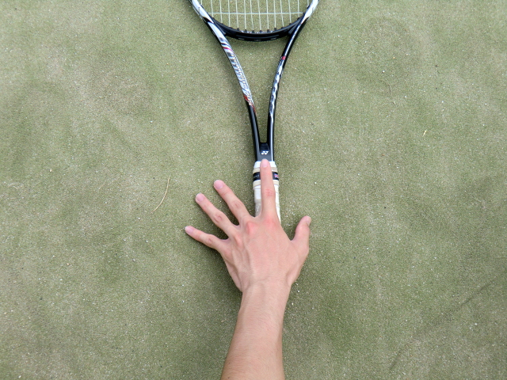
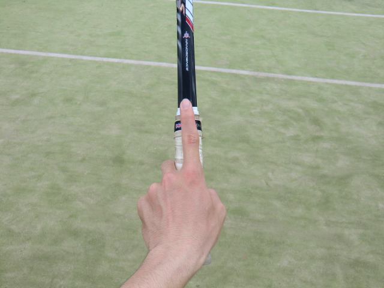

グリップの持ち方
ウエスタン・グリップ持ち
イースタン・グリップ持ち
＊セミ持ちは、省く

ウエスタン・グリップ持ち
ウエスタン・グリップ持ちは、右図のように一旦ラケットを置き、人差し指とラケットが水平になるように人差し指をグリップの上に乗せ、そのままグリップを握り、持ちます。
この持ち方は主にフォアハンド・ストローク、バックハンド・ストローク、そしてボレーのときに使います。（バックハンド・ストロークは、イースタングリップ持ちを使う人もいます。）

イースタン・グリップ持ち
イースタングリップ持ちは、ラケットのフレームを上にした状態で、人差し指とラケットが水平になるように人差し指をグリップの上に乗せ、そのままグリップを握り、持ちます。
この持ち方は主にサービスやスマッシュに使います。
＊ウエスタン・グリップとイースタン・グリップの間の持ち方でセミ・グリップがありますが、大半の人が使わないので省きます。